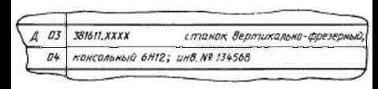
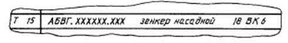
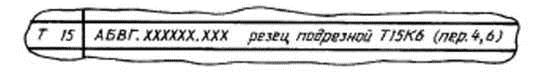
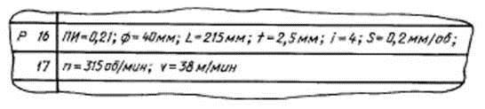
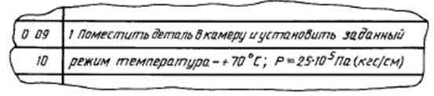
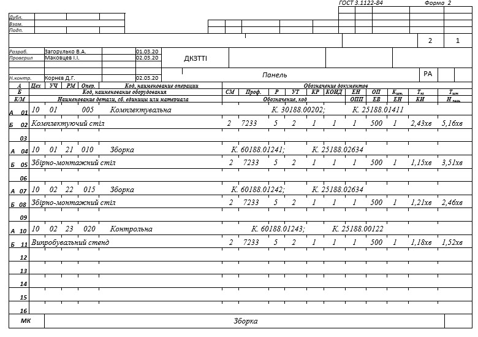
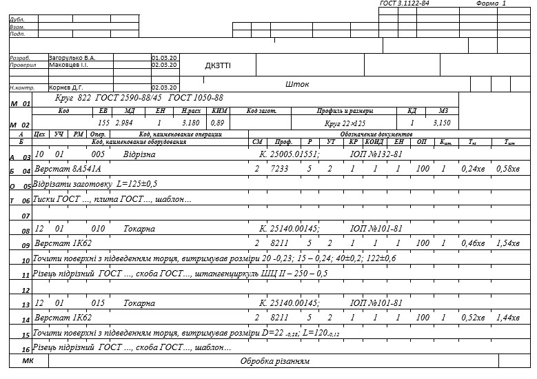

4.10 Правила запису адресної інформації про операцію (операції) ГОСТ 3.1129-93
Нумерацію
операцій варто виконувати числами ряду арифметичної прогресії, наприклад 5; 10;
15; 20 і т.д. Проміжні цифри, при необхідності, використовують для нумерації
операцій, розроблювальних додатково або замість анульованих, через зміну
креслення, уточнення технологічного процесу й т.п. Нумерацію анульованої
операції не застосовують.
Наприклад,
у МК анульована операція 15 і замість її вводять дві інші операції: однієї з них
привласнюють номер 16, інший 17, а номер 15 більше не
застосовують.
В
умовах обробки або проектування документів із застосуванням засобів
обчислювальної техніки нумерацію операцій варто виконувати тризначним числом,
наприклад 005: 010; 015 і т.д.
Допускається
застосовувати чотиризначну нумерацію, наприклад 005; 0010; 0015; 0020 і
т.д.
Запис
коду операції варто виконувати відповідно до КТО.
Вибір
відповідного коду операції треба виконувати по її найменуванню, стосовно до
технологічного методу, наприклад для найменування операції «круглошліфувальна»
її код по КТО буде 4130; а для «термічного кисневого різання» - 9172 і
т.д.
Для
вибору коду операцій, що мають загальний характер дій, не обумовлених конкретним
технологічним методом, варто використовувати в КТО «Операції загального
призначення», наприклад «Промивання», «Готування суміші» і
т.д.
Запис
коду операції варто виконувати у відповідній графі документа перед її
найменуванням, наприклад: «7381.
Фарбування струминним обливом з витримкою в парах
розчинника».
При
неможливості розміщення такої інформації на одному рядку її переносять на
наступні.
Між кодом і найменуванням операції варто залишати 3 - 4 знаки, наприклад, «2128 Гнуття».
4.10.1 Правила запису інформації про робочі
місця
Інформація
про робочі місця вказується у зведених документах на процеси (МК, КТП, КТТП) і в
документах, де описують дії по виконанню операції (ОК,
КТО).
Інформація
про робочі місця включає наступні дані:
-
код
(позначення) устаткування:
-
найменування
встаткування;
-
модель
устаткування;
-
інвентарний
номер устаткування.
Запис
коду (позначення) устаткування варто виконувати тільки для документів,
оброблюваних засобами обчислювальної техніки:
Найменування
встаткування і його модель варто записувати відповідно до паспорта встаткування,
наприклад «токарно-гвинторізний верстат 1К62».
При
неможливості розміщення інформації з його найменування, моделі й інвентарному
номеру на першому рядку зазначену інформацію допускається переносити на
наступний рядок (наступні рядки) без дублювання проставляння службового символу
(рисунок 4.16).

Рисунок
4.16
Запис
найменування встаткування варто виконувати з малої літери.
Допускається
інвентарний номер устаткування не вказувати, якщо це не буде пов'язане з
вимогами виробництва, охорони праці й т.п.
4.10.2 Правила запису інформації про застосовувані
матеріали
Запис
інформації в документах про застосовувані матеріали виконують у повній або
короткій формі.
Запис
даних за матеріалами на процеси виконують із ув'язуванням до службового символу
«М» у відповідних графах після основних написів відповідно до вимог відповідних
стандартів на правила оформлення документів.
При
необхідності запису даних по допоміжних матеріалах її виконують тільки після
вказівки даних по основних матеріалах у черговості їхнього технологічного
застосування.
При
додатковому введенні в комплект документів МК/ВМ або МК/КК їх варто
розташовувати відразу ж після МК із відповідним посиланням до будь-якої першої
операції (у графі «Позначення документа») на позначення даного
документа.
4.10.3 Правила запису інформації про комплектуючі
складові частини виробу
Інформація
про комплектуючі складові частини виробу характерна для документів,
розроблювальних на технологічні процеси складання, є основною й у зв'язку із цим
записується в операціях перед вказівкою інформації про
матеріали.
До
зазначеної інформації відносять:
-
найменування
деталі (складальної одиниці);
-
позначення,
код деталі (складальної одиниці);
-
позначення
підрозділу підприємства (ОПП), звідки надходять складові частини виробу на
складання (склад, що комплектує, відділення);
-
код
одиниці величини або одиниця величини (ЕВ);
-
одиниця
нормування (ЕН);
-
кількість
складових частин, що входять у виріб (КИ).
При
маршрутному описі процесу КК є основним документом для комплектації й складання
виробу.
4.10.4
Правила
запису інформації про трудовитратах
Інформацію
про трудовитратах застосовують у документах на процеси (МК, КТП, КТТП і т.п.) і
операції.
Крім
зазначених документів, вихідна інформація про нормування праці виконавців, що
беруть участь і виконання технологічного процесу, міститься в нормувальних
картах.
У
документах на процеси вказують повну інформацію з трудовитрат на операції, що
розраховують по відповідних техніко-нормувальних і хронометражних картах, а
також за розрахунковим даними, що міститься в ОК.
У
документах на операцію вказують основні дані з розрахунку на
операцію.
4.10.5
Правила
запису
інформації про вимоги до виконуваних дій
Інформація
про вимоги до виконуваних дій має масовий характер і застосовується в документах
при описі змісту операцій.
Для
опису змісту процесу (операцій) відповідно до ГОСТ 3.1109 застосовують наступні
три види:
-
маршрутний;
-
операційний;
-
маршрутно-операційний.
Опис
операцій завжди виконують із прив'язкою до службового символу «О».
Маршрутний
опис ТП, в основному, варто застосовувати в документах на процеси, виконувані в
дослідному й дрібносерійному типах виробництва.
Не
рекомендується застосовувати маршрутний опис для операцій, пов'язаних з
небезпекою виконуваних робіт, з надійністю виготовлення виробів і їхньою
експлуатацією.
Послідовність
запису змісту операції маршрутного опису наступна:
-
ключове
слово;
-
додаткова
інформація;
-
найменування
предметів виробництва, оброблюваних поверхонь і конструктивних
елементів;
-
умовне
позначення поверхонь конструктивних елементів і вказівка
параметрів;
-
додаткова
інформація.
Запис
змісту операції варто починати із ключового слова, що характеризує виконувану
дію, виражена дієсловом у невизначеній формі, наприклад, точити, зібрати,
перевірити й т.п.
На
другому місці при необхідності варто вказувати додаткову інформацію, під якою
мають на увазі одночасну кількість оброблюваних, ( що перевіряються й т.п.)
поверхонь деталей (елементів деталей), складових частин виробу, що збираються,
контрольованих параметрів і т.п., наприклад:
«Свердлити
4 отворі...»
«Зібрати
2 прокладки...»
На
третьому місці, при необхідності, також уводять уточнюючу інформацію, що
характеризує вид предмета виробництва, оброблюваної поверхні й т.п.,
наприклад:
«Свердлити
4 наскрізні отвори...»
«Установити
2 прокладки, що герметизують...»
На
четвертому місці, а може бути на 2-му або 3-му, у структурі опису змісту
операції передбачають вказівку найменування предметів виробництва, оброблюваних
поверхонь і конструктивних елементів, наприклад:
«Точити
поверхні...»
«Фрезерувати
фасонну поверхню...»
«Розгорнути
два глухих отвори...»
Додаткова
інформація, що приводиться на третьому і четвертому місці, не має обов'язкового
характеру й установлюється розроблювачем документів за своїм
розсудом.
На
п'ятому місці передбачають вказівку умовних позначень поверхонь, конструктивних
елементів і параметрів. Під умовними позначеннями поверхонь і конструктивних
елементів варто вказувати відповідні позначення, застосовувані розроблювачем
документів з метою виключення текстового запису,
наприклад:
«Æ»
- діаметр;
«L» — довжина;
«В» — ширина;
«r»-
радіус;
«Ð»
- кут.
Вказівку
такої інформації рекомендується виконувати з додатковим словом -
«витримуючи...», наприклад:
«Точити
поверхні, витримуючи Æ
20-0 21; Æ
42-0,25; L= 7±0,2; L = 12±0,2…»;
«Стругати
уклон, витримуючи Ð45°...».
Допускається
в тексті для окремих розмірів не приводити відповідні умовні позначення
поверхонь і конструктивних елементів (для вказівки довжини, ширини, кутів і
т.д.), наприклад:
«Точити
поверхні, витримуючи Æ
20-0 21; Æ
42-0,25; 7±0,2; 12±0,2…»;
«Стругати
уклон, витримуючи 45°...».
На
шостому місці передбачають вказівку додаткової інформації, що виражається у
вказівці умовних позначень радіусів (r); фасок (с) з даними, якщо вони зустрічаються в
тексті змісту операції, наприклад:
«Точити
поверхні, витримуючи Æ
20-0 21; Æ
42-0,25; L= 7±0,2; L = 12±0,2 c r=2…».
На
сьомому місці передбачають вказівку додаткової інформації, установлюваної по
розсуду розроблювача документів, що виражається в застосуванні наступних слів:
«остаточно»; «одночасно»; «по копіру»; «по програмі»; «відповідно до креслення»;
«попередньо» і т.п.
Наприклад:
«Точити поверхні, витримуючи Æ
20-0 21; Æ
42-0,25; L= 7±0,2; L = 12±0,2 c r1=1,5; r2=2,0 по
копіру».
Крім
зазначених пропозицій у тексті маршрутного опису варто додатково вказувати й
інші вимоги по виконанню операції, наприклад вказівки по допоміжних діях,
пов'язаним з установкою на встаткування й зняттям з устаткування
великогабаритних виробів, відображенням дій по технічному контролю,
наприклад:
«Контроль
виробничим майстром - 10 %, виконавцем - 100 %»
«Укласти
деталь у тару» і т.п.
При
маршрутному описі операцій у тексті не повинна відбиватися інформація з
допоміжних переходів. Виключення становлять дії, пов'язані з обробкою виробів
великої маси й що оказують вплив на охорону праці
виконавців.
Операційний
опис технологічних процесів характерно для документів, розроблювальних і
застосовуваних у серійному й масовому типах виробництва.
В
основному для опису операцій у цих випадках застосовують операційні карти
(ОК).
При
операційному описі всю операцію розбивають на основні й допоміжні
переходи.
Запис
переходів варто виконувати по Класифікатору технологічних переходів
машинобудування й приладобудування (КТП) 1 89 187 без вказівки їхніх кодів
(додаток Б).
Для
позначення порядкових номерів переходів варто застосовувати арабські цифри в
порядку зростання, наприклад 1, 2, 3 і т.д.
Після
вказівки переходу варто ставити крапку.
Початок
запису переходу варто починати із прописної букви.
Зміст
переходу варто завжди записувати в короткій формі й виключати дублювання
інформації, що міститься, в операції.
Маршрутно-операційний
опис ТП характерно для підприємств дослідного й дрібносерійного типів
виробництва, де в документах зустрічаються й маршрутний, і операційний опис
технологічного процесу, наприклад маршрутно-операційний опис технологічного
процесу зварювання, у якому більша частина процесу, пов'язана з підготовкою
комплектуючих складових частин під зварювання, описується в МК, а операції,
безпосередньо зв'язані зі зварюванням, в - ОК.
4.10.6 Правила запису інформації з технологічного
оснащення
Інформацію
з технологічного оснащення варто записувати у всіх документах, де описують зміст
операцій.
Зазначена
інформація може бути записана й у зведений документ по оснащенню на процес - у
відомість оснащення (ВО).
У
документах, де описують зміст операції, вказівка інформації з технологічного
оснащення виконують після змісту:
операції
- при маршрутному описі технологічного процесу;
переходу
- при операційному описі технологічного процесу.
Порядок
черговості запису інформації з технологічного оснащення в документах до операції
й переходу представлений у таблиці 4.9.
Таблиця
4.9
|
Черговість запису
інформації |
Найменування видів технологічного
оснащення |
|
1 |
Пристрій, штамп, прес-форма, форма й
т.п. |
|
2 |
Допоміжний інструмент, устаткування до
базових пристроїв |
|
3 |
Різальний інструмент, слюсарний
інструмент |
|
4 |
Засоби виміру (прилади, вимірювальні
пристрої, калібри, скоби й
т.п.) |
В
основному інформація з технологічного оснащення складається із двох основних
частин:
-
позначення;
-
найменування,
моделі, типу, позначення стандарту й т.п.
Коди
або позначення технологічного оснащення записуються на першому місці в рядку
документа із прив'язкою до службового символу «Т».
Запис
варто виконувати по всій довжині рядка з можливістю, при необхідності, переносу
інформації на наступні рядки. Поділ інформації з кожного засобу технологічного
оснащення варто виконувати через знак «;». Кількість одночасно застосовуваних
одиниць технологічного оснащення варто вказувати після коду (позначення)
оснащення, беручи в дужки, наприклад. АБВГ ХХХХХХ.ХХХ (2) фреза
дискова.
Примітки:
У
випадку відсутності якого-небудь технологічного оснащення, записують наступне
оснащення, що йде у порядку черговості.
Допускається
не вказувати кількість застосовуваних одиниць технологічного
оснащення.
Найменування
технологічного оснащення варто вказувати відповідно до наявного технологічного
паспорта або нормативної документації (НД) (рисунок 4.17).

Рисунок
4.17
При
необхідності вказівки до операції (переходу) декількох видів оснащення її варто
вказувати, у порядку черговості.
При
маршрутному описі технологічного процесу допускається вказівку по
стандартизованому оснащенню не приводити.
У
випадку, якщо те саме позначення технологічного оснащення при операційному описі
технологічного процесу застосовують в інших переходах, з метою скорочення
відповідної інформації й виключення її дублювання, допускається після її
найменування (у тому переході, де її застосовують у перший раз) указувати в
дужках номера відповідних переходів (рисунок 4.18).

Рисунок
4.18
У
цьому випадку в наступних переходах відповідну інформацію вказувати не
слід.
4.10.7 Правила запису інформації про технологічні
режими
Інформацію
про технологічні режими вказують при операційному описі технологічних процесів
після запису інформації про технологічне оснащення із прив'язкою до службового
символу «Р».
Запис
параметрів технологічних режимів виконують:
-
у
відповідних графах, передбачених формами документів;
-
на
окремих рядках із прив'язкою до службового символу «Р» і одночасною вказівкою
даних по технологічних режимах і їхніх параметрах;
-
на
рядках, де виконують запис змісту технологічних переходів із прив'язкою до
службового символу «О».
При
застосуванні спеціалізованих форм документів, що передбачають відповідні графи
для вказівки технологічних режимів, запис значення їхніх параметрів, як правило,
виконують з нового рядка із прив'язкою до службового символу
«Р».
При
застосуванні форм документів універсального призначення, що не передбачає графи
для вказівки даних по технологічних режимах, виконують на окремому рядку із
прив'язкою до службового символу «Р» (рисунок 4.19).

Рисунок
4.19
При
неможливості розміщення інформації з технологічних режимів на одному рядку, її
допускається переносити на наступний рядок (наступні
рядки).
Запис
даних по технологічних режимах варто виконувати через розділовий знак
«;».
При
застосуванні операційного опису технологічного процесу й умові зазначення даних
тільки по двох-трьох параметрах допускається таку інформацію записувати після
тексту змісту переходу (рисунок 4.20).

Рисунок
4.20
При
неможливості розміщення інформації з технологічних режимів на першому рядку
допускається її перенос на наступний рядок (наступні
рядки).
При
операційному описі ТП запис інформації про технологічні режими в документах
обов'язкова.
При
заповненні інформації на рядках, що мають службові символи А, Б, К, М варто
керуватися правилами по заповненню відповідних граф, розташованих на цих
рядках.
Послідовність
заповнення інформації для кожної операції по типах рядків наведена в таблиці
4.10.
У
випадку відсутності інформації з яким-небудь службовим символом, записується
інформація з наступним службовим символом один по одному.
Таблиця
4.10
|
Вид технологічного
процесу |
Вид опису технологічного процесу
(операції) |
Номер форми
МК |
Черговість заповнення службових
символів |
|
Одиничні технологічні процеси,
виконувані із застосуванням різних методів
обробки |
Маршрутне |
1 1б |
М01, М02, А, Б, О, Т
А, Б, О,
Т |
|
Операційне |
1 1б |
М01, М02, А, Б
А,
Б | |
|
Одиничні технологічні процеси
складання |
Маршрутне |
2 1б |
А, Б, К, М, О,
Т А, Б, К, М, О,
Т |
|
Операційне |
2 1б |
А, Б, К,
М А, Б, К,
М | |
|
Типові й групові технологічні процеси,
що виконуються із застосуванням різних методів виготовлення й
ремонту |
Маршрутне |
2 1б |
А, Б, К, М,
Т А, Б, К, М,
Т |
|
Операційне |
2 1б |
А, Б, К, М,
Т А, Б, К, М,
Т |
Графи
форм варто заповнювати відповідно до таблиці 4.11.
Таблиця
4.11
|
Номер
графи |
Найменування графи |
Службовий символ |
Зміст
інформації |
|
1 |
|
|
Позначення службового символу й
порядковий номер рядка |
|
2 |
|
М01 |
Найменування, сортамент, розмір і
марка матеріалу, позначення стандарту, технічних
умов |
|
3 |
Код |
М02 |
Код матеріалу по
класифікаторі |
|
4 |
ЕВ |
М02, К,
М |
Код одиниці величини (маси, довжини,
площі й т.п.) деталі, заготівки,
матеріалу. Допускається вказувати одиниці виміру
величини |
|
5 |
МД |
М02 |
Маса деталі по конструкторському
документі |
|
6 |
ЕН |
М02, Б, К,
М |
Одиниця нормування, на яку встановлена
норма витрати матеріалу або норма часу, наприклад 1, 10,
100 |
|
7 |
Н.
расх. |
М02, К,
М |
Норма витрати
матеріалу |
|
8 |
КИМ |
М02 |
Коефіцієнт використання
матеріалу |
|
9 |
Код заготовки |
М02,
М03 |
Код заготівки по класифікатору.
Допускається вказувати вид заготівки (виливка, прокат, кування й
т.п.) |
|
10 |
Профіль і
розміри |
М02,
М03 |
Профіль і розміри вихідної заготівки.
Інформацію з розмірів варто вказувати виходячи з наявних габаритів.
Допускається профіль не
вказувати |
|
11 |
КД |
М02,
М03 |
Кількість деталей, що виготовляються з
однієї заготівки |
|
12 |
МЗ |
М02,
М03 |
Маса
заготівки |
|
13 |
|
|
Графа для особливих
вказівок |
|
14 |
Цех |
А |
Номер (код) цеху, у якому виконується
операція |
|
15 |
Уч. |
А |
Номер (код) дільниці, конвеєра,
потокової лінії |
|
16 |
РМ |
А |
Номер (код) робочого
місця |
|
17 |
Опер. |
А |
Номер операції (процесу) у
технологічній послідовності виготовлення або ремонту виробу (включаючи
контроль і переміщення) |
|
18 |
Код, найменування
операції |
А |
Код операції по технологічному
класифікатору, найменування операції (додаток
А) |
|
19 |
Позначення
документа |
А |
Позначення документів, інструкцій з
охорони праці, що застосовуються при виконанні даної операції. Склад
документів варто вказувати через розділовий знак «;» з можливістю, при
необхідності, переносу інформації на наступні
рядки |
|
20 |
Код, найменування
встаткування |
Б |
Код устаткування по класифікатору,
коротке найменування встаткування, його інвентарний
номер Інформацію варто вказувати через
розділовий знак Допускається замість короткого
найменування встаткування вказувати сто
модель. Допускається не вказувати інвентарний
номер |
|
21 |
СМ |
Б |
Ступінь механізації (код ступеня
механізації) (додаток В) |
|
22 |
Проф. |
Б |
Код професії по класифікатору
ОКПДТР (додаток
В) |
|
23 |
Р |
Б |
Розряд роботи, необхідний для
виконання операції |
|
24 |
УТ |
Б |
Код умов праці по класифікатору ОКПДТР
і код виду норми. Код включає три цифри: перша – код умов праці (додаток
Г), дві наступні – код форми та та системи оплати праці (додаток
В) |
|
25 |
КР |
Б |
Кількість виконавців, зайнятих при
виконанні операції |
|
26 |
КОИД |
Б |
Кількість одночасно виготовлених
(ремонтованих) деталей (складальних одиниць) при виконанні однієї
операції Примітка. При виконанні процесу
переміщення варто вказувати обсяг вантажної одиниці - кількість деталей у
тарі |
|
27 |
ОП |
Б |
Обсяг виробничої партії в штуках.
При виконанні процесу переміщення в
графі варто вказувати обсяг транспортної партії, кількість вантажних
одиниць, переміщуваних
одночасно |
|
28 |
Кшт. |
Б |
Коефіцієнт штучного часу при
багатоверстатному
обслуговуванні |
|
29 |
Тпз |
Б |
Норма підготовчо-заключного часу на
операцію |
|
30 |
Тшт. |
Б |
Норма штучного часу на
операцію |
|
31 |
Найменування деталі, сб. одиниці або
матеріалу |
К,
М |
Найменування деталей, складальних
одиниць, матеріалів, застосовуваних при виконанні
операції |
|
32 |
Позначення,
код |
К,
М |
Позначення деталей, складальних
одиниць по конструкторському документі або матеріалів по
класифікаторі |
|
33 |
ОПП |
К,
М |
Позначення підрозділу (складу, коморі
й т.п.), звідки надходять комплектуючі деталі, складальні одиниці або
матеріали; при розбиранні — куди
надходять |
|
34 |
КИ |
К,
М |
Кількість деталей, складальних
одиниць, застосовуваних при складанні виробу; при розбиранні — кількість
одержуваних |

Рисунок 4.21 – Приклад оформлення маршрутної карти на одиничний технологічний процес (операційного опису) зборки

Рисунок
4.22 – Приклад оформлення маршрутної карти на одиничний технологічний
процес(маршрутного опису) обробки різанням